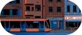
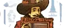

HIVER 2022
Numéro 57
Au programme de notre nouveau numéro, Plusieurs enquêtes sur les marchands de santé, qui dévoilent comment notre corps est devenu un territoire économique et politique.
Les articles de ce numéro

100% matière grise
CARNET STATISTIQUES ET SONDAGES SONT PARTOUT. YVES PAGÈS LES REND INTELLIGENTS ET DRÔLES
La mélodie de Tchekhov
ENTRETIEN AVEC LE TRADUCTEUR ANDRÉ MARKOWICZ, SPÉCIALISTE DE LA LITTÉRATURE RUSSE.
Birmanie, année zéro
RÉCIT TROIS TÉMOINS RACONTENT DE L’INTÉRIEUR LA RÉVOLUTION ÉTOUFFÉE PAR LA JUNTE
En librairie, sur abonnement ou en ligne
Tous les 3 mois
Réalisée en équipe par des journalistes,
photographes, illustrateurs
196 pages de récits
intimes et de reportages
Ainsi mourut Emmett Till
enquête AUTOPSIE D’UN LYNCHAGE QUI N’EN FINIT PAS DE HANTER LE MISSISSIPPI.
Je préfère continuer à me battre
ENTRETIEN EN 2012, ARTHUR ET VINCENT SONT MORTS AU TRAVAIL, ENSEVELIS SOUS DES TONNES DE SUCRE. DEPUIS, LEURS COMPAGNES ESSAIENT D’OBTENIR JUSTICE.
Au pied du mur
PHOTO LE PHOTOGRAPHE FRANCESCO ANSELMI A LONGÉ CÔTÉ AMÉRICAIN LA FRONTIÈRE SÉPARANT LES ÉTATS-UNIS DU MEXIQUE.
100% matière grise
CARNET STATISTIQUES ET SONDAGES SONT PARTOUT. YVES PAGÈS LES REND INTELLIGENTS ET DRÔLES

Pour vivre heureux, vivons cachets
ENTRETIEN ENTRETIEN AVEC LE TRADUCTEUR ANDRÉ MARKOWICZ, SPÉCIALISTE DE LA LITTÉRATURE RUSSE.
Birmanie, année zéro
BANDE DESSINÉE DES ORPAILLEURS DU DARFOUR RACONTENT LA LUTTE POUR LES FILONS MIRACULEUX DU SAHARA.